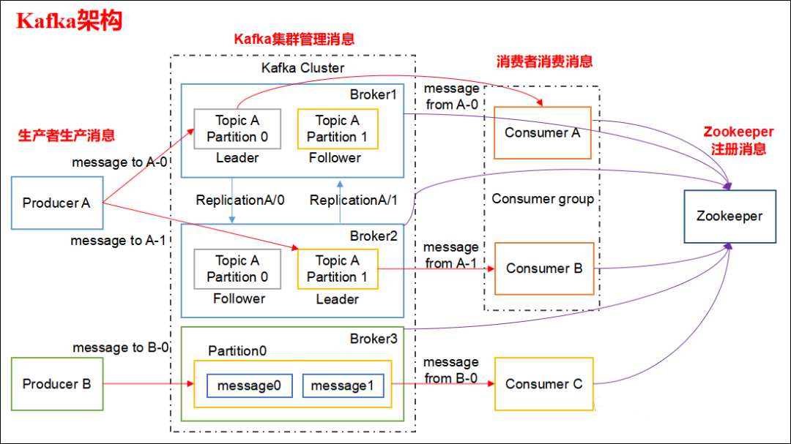
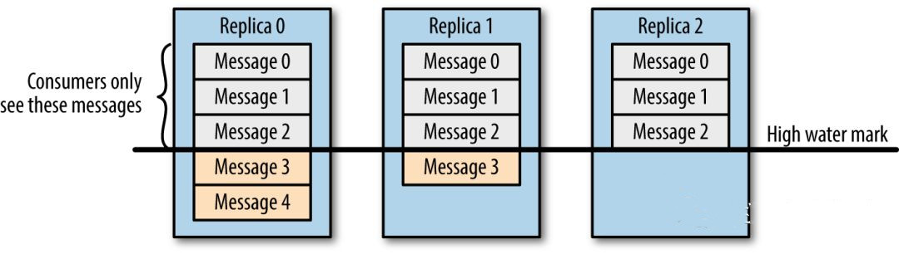
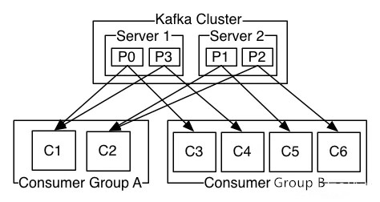

Kafka 都有哪些特点？
- 高吞吐量、低延迟：kafka每秒可以处理几十万条消息，它的延迟最低只有几毫秒，每个topic可以分多个partition, consumer group 对partition进行consume操作。
- 可扩展性：kafka集群支持热扩展
- 持久性、可靠性：消息被持久化到本地磁盘，并且支持数据备份防止数据丢失
- 容错性：允许集群中节点失败（若副本数量为n,则允许n-1个节点失败）
- 高并发：支持数千个客户端同时读写
请简述下你在哪些场景下会选择 Kafka？
- 日志收集：一个公司可以用Kafka可以收集各种服务的log，通过kafka以统一接口服务的方式开放给各种consumer，例如hadoop、HBase、Solr等。
- 消息系统：解耦和生产者和消费者、缓存消息等。
- 用户活动跟踪：Kafka经常被用来记录web用户或者app用户的各种活动，如浏览网页、搜索、点击等活动，这些活动信息被各个服务器发布到kafka的topic中，然后订阅者通过订阅这些topic来做实时的监控分析，或者装载到hadoop、数据仓库中做离线分析和挖掘。
- 运营指标：Kafka也经常用来记录运营监控数据。包括收集各种分布式应用的数据，生产各种操作的集中反馈，比如报警和报告。
- 流式处理：比如spark streaming和 Flink
Kafka 的设计架构你知道吗？

Kafka 架构分为以下几个部分
- Producer ：消息生产者，就是向 kafka broker 发消息的客户端。
- Consumer ：消息消费者，向 kafka broker 取消息的客户端。
- Topic ：可以理解为一个队列，一个 Topic 又分为一个或多个分区，
- Consumer Group：这是 kafka 用来实现一个 topic 消息的广播（发给所有的 consumer）和单播（发给任意一个 consumer）的手段。一个 topic 可以有多个 Consumer Group。
- Broker ：一台 kafka 服务器就是一个 broker。一个集群由多个 broker 组成。一个 broker 可以容纳多个 topic。
- Partition：为了实现扩展性，一个非常大的 topic 可以分布到多个 broker上，每个 partition 是一个有序的队列。partition 中的每条消息都会被分配一个有序的id（offset）。将消息发给 consumer，kafka 只保证按一个 partition 中的消息的顺序，不保证一个 topic 的整体（多个 partition 间）的顺序。
- Offset：kafka 的存储文件都是按照 offset.kafka 来命名，用 offset 做名字的好处是方便查找。例如你想找位于 2049 的位置，只要找到 2048.kafka 的文件即可。当然 the first offset 就是 00000000000.kafka。
Kafka 分区的目的？
分区对于 Kafka 集群的好处是：实现负载均衡。分区对于消费者来说，可以提高并发度，提高效率。
你知道 Kafka 是如何做到消息的有序性？
kafka 中的每个 partition 中的消息在写入时都是有序的，而且单独一个 partition 只能由一个消费者去消费，可以在里面保证消息的顺序性。但是分区之间的消息是不保证有序的。
Kafka 的高可靠性是怎么实现的？
可以参见我这篇文章：Kafka 是如何保证数据可靠性和一致性
请谈一谈 Kafka 数据一致性原理
一致性就是说不论是老的 Leader 还是新选举的 Leader，Consumer 都能读到一样的数据。

假设分区的副本为3，其中副本0是 Leader，副本1和副本2是 follower，并且在 ISR 列表里面。虽然副本0已经写入了 Message4，但是 Consumer 只能读取到 Message2。因为所有的 ISR 都同步了 Message2，只有 High Water Mark 以上的消息才支持 Consumer 读取，而 High Water Mark 取决于 ISR 列表里面偏移量最小的分区，对应于上图的副本2，这个很类似于木桶原理。
这样做的原因是还没有被足够多副本复制的消息被认为是“不安全”的，如果 Leader 发生崩溃，另一个副本成为新 Leader，那么这些消息很可能丢失了。如果我们允许消费者读取这些消息，可能就会破坏一致性。试想，一个消费者从当前 Leader（副本0） 读取并处理了 Message4，这个时候 Leader 挂掉了，选举了副本1为新的 Leader，这时候另一个消费者再去从新的 Leader 读取消息，发现这个消息其实并不存在，这就导致了数据不一致性问题。
当然，引入了 High Water Mark 机制，会导致 Broker 间的消息复制因为某些原因变慢，那么消息到达消费者的时间也会随之变长（因为我们会先等待消息复制完毕）。延迟时间可以通过参数 replica.lag.time.max.ms 参数配置，它指定了副本在复制消息时可被允许的最大延迟时间。
ISR、OSR、AR 是什么？
ISR：In-Sync Replicas 副本同步队列
OSR：Out-of-Sync Replicas
AR：Assigned Replicas 所有副本
ISR是由leader维护，follower从leader同步数据有一些延迟（具体可以参见 图文了解 Kafka 的副本复制机制），超过相应的阈值会把 follower 剔除出 ISR, 存入OSR（Out-of-Sync Replicas ）列表，新加入的follower也会先存放在OSR中。AR=ISR+OSR。
LEO、HW、LSO、LW等分别代表什么
LEO：是 LogEndOffset 的简称，代表当前日志文件中下一条
HW：水位或水印（watermark）一词，也可称为高水位(high watermark)，通常被用在流式处理领域（比如Apache Flink、Apache Spark等），以表征元素或事件在基于时间层面上的进度。在Kafka中，水位的概念反而与时间无关，而是与位置信息相关。严格来说，它表示的就是位置信息，即位移（offset）。取 partition 对应的 ISR中 最小的 LEO 作为 HW，consumer 最多只能消费到 HW 所在的位置上一条信息。
LSO：是 LastStableOffset 的简称，对未完成的事务而言，LSO 的值等于事务中第一条消息的位置(firstUnstableOffset)，对已完成的事务而言，它的值同 HW 相同
LW：Low Watermark 低水位, 代表 AR 集合中最小的 logStartOffset 值。
Kafka 在什么情况下会出现消息丢失？
可以参见我这篇文章：Kafka 是如何保证数据可靠性和一致性
怎么尽可能保证 Kafka 的可靠性
可以参见我这篇文章：Kafka 是如何保证数据可靠性和一致性
消费者和消费者组有什么关系？
每个消费者从属于消费组。具体关系如下：

Kafka 的每个分区只能被一个消费者线程，如何做到多个线程同时消费一个分区？
Airbnb 是如何通过 balanced Kafka reader 来扩展 Spark streaming 实时流处理能力的
数据传输的事务有几种？
数据传输的事务定义通常有以下三种级别：
（1）最多一次: 消息不会被重复发送，最多被传输一次，但也有可能一次不传输
（2）最少一次: 消息不会被漏发送，最少被传输一次，但也有可能被重复传输.
（3）精确的一次（Exactly once）: 不会漏传输也不会重复传输,每个消息都传输被
Kafka 消费者是否可以消费指定分区消息？
Kafa consumer消费消息时，向broker发出fetch请求去消费特定分区的消息，consumer指定消息在日志中的偏移量（offset），就可以消费从这个位置开始的消息，customer拥有了offset的控制权，可以向后回滚去重新消费之前的消息，这是很有意义的
Kafka消息是采用Pull模式，还是Push模式？
Kafka最初考虑的问题是，customer应该从brokes拉取消息还是brokers将消息推送到consumer，也就是pull还push。在这方面，Kafka遵循了一种大部分消息系统共同的传统的设计：producer将消息推送到broker，consumer从broker拉取消息。
一些消息系统比如Scribe和Apache Flume采用了push模式，将消息推送到下游的consumer。这样做有好处也有坏处：由broker决定消息推送的速率，对于不同消费速率的consumer就不太好处理了。消息系统都致力于让consumer以最大的速率最快速的消费消息，但不幸的是，push模式下，当broker推送的速率远大于consumer消费的速率时，consumer恐怕就要崩溃了。最终Kafka还是选取了传统的pull模式。
Pull模式的另外一个好处是consumer可以自主决定是否批量的从broker拉取数据。Push模式必须在不知道下游consumer消费能力和消费策略的情况下决定是立即推送每条消息还是缓存之后批量推送。如果为了避免consumer崩溃而采用较低的推送速率，将可能导致一次只推送较少的消息而造成浪费。Pull模式下，consumer就可以根据自己的消费能力去决定这些策略。
Pull有个缺点是，如果broker没有可供消费的消息，将导致consumer不断在循环中轮询，直到新消息到t达。为了避免这点，Kafka有个参数可以让consumer阻塞知道新消息到达(当然也可以阻塞知道消息的数量达到某个特定的量这样就可以批量发